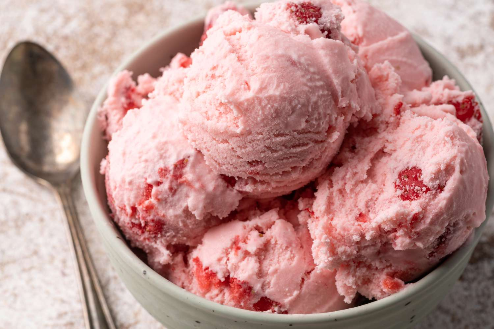

Home
Strawberry Ice Cream

Description
Strawberry ice cream is super easy to make with this recipe that doesn't use an egg-custard base but still tastes rich and creamy.
This strawberry ice cream is rich, creamy, and full of fresh and fruity flavor.
Ingredients
- 4 cups of strawberries
- 4 cups of whole milk
- 4 cups of heavy cream
- 2 cups of white sugar
- 4 teaspoons of vanilla extract
- ½ teasponalt
- 4 drops of food coloring(Optional)
Steps
- Gather all ingredients.
- Combine strawberries, milk, cream, sugar, vanilla, salt, and food coloring in a large bowl.
- Pour strawberry mixture into the freezer bowl of an ice cream maker; freeze according to the manufacturer's directions.
- Transfer to an airtight container and freeze until firm.